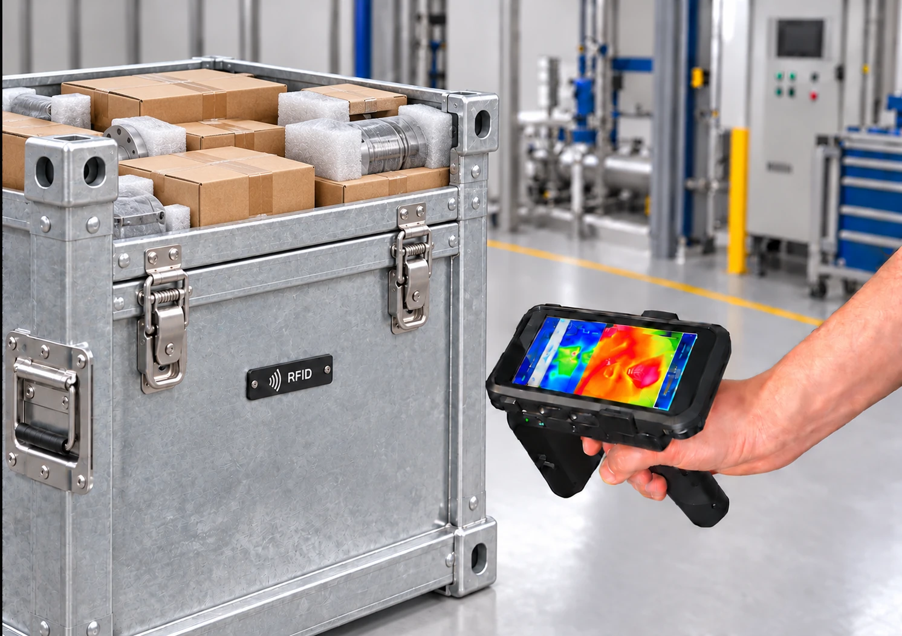
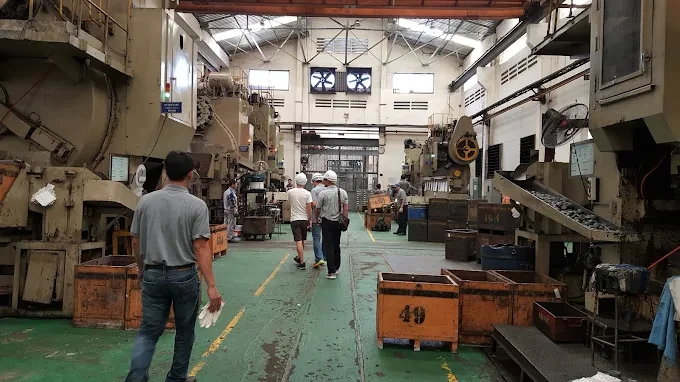
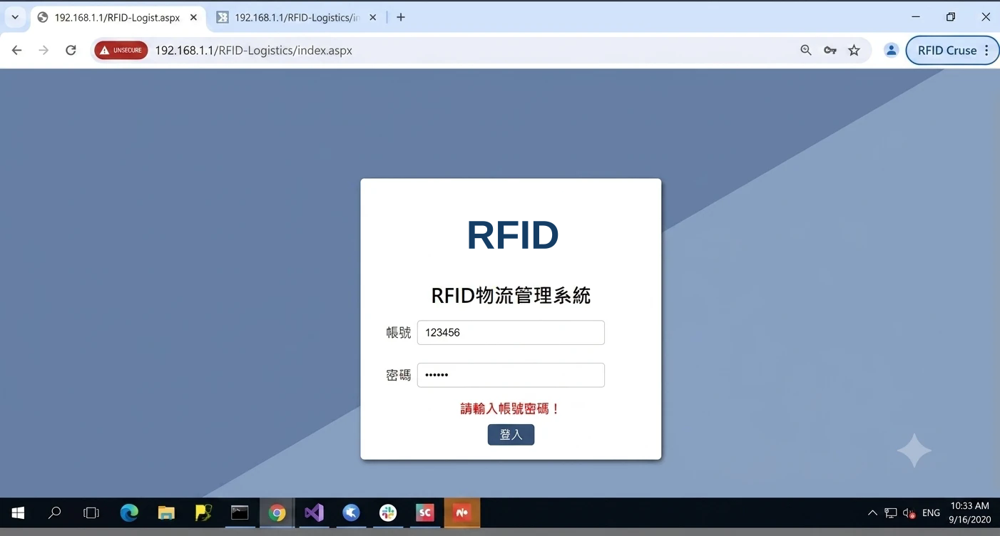
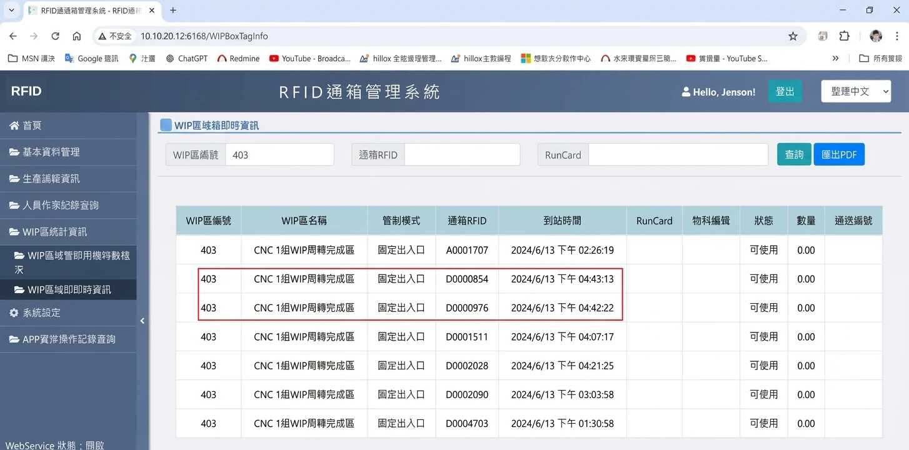
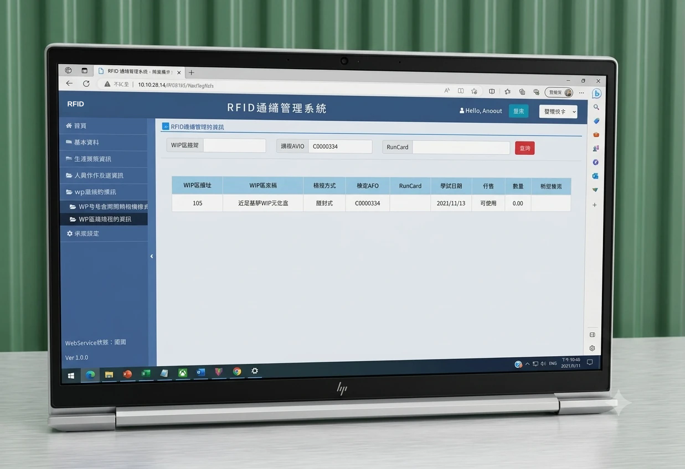
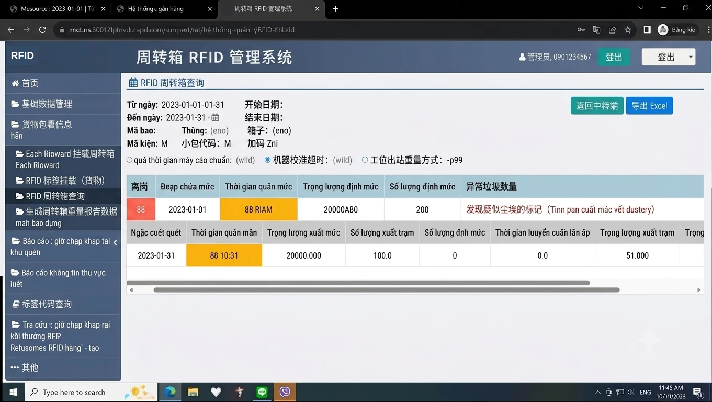

Tìm kiếm thùng hàng mất nhiều thời gian
RFID hỗ trợ xác định vị trí và tìm kiếm thùng hàng để nhân viên theo dõi vật liệu trong quá trình sản xuất.
RFID / WIP / HONG MING GLOBAL
Dự án tại CX Technology (VN): ứng dụng RFID trong quản lý thùng hàng, theo dõi WIP và ghi nhận dữ liệu sản xuất trên toàn nhà máy.
Trao đổi về dự án RFID ↗

CX TECHNOLOGY (VN)
Gia công dập nguội và dập chính xác, sản xuất linh kiện kim loại, linh kiện loa, phụ tùng ô tô và linh kiện điện tử tiêu dùng.
Hệ thống quản lý sản xuất và ghi nhận sản xuất bằng RFID trên toàn nhà máy. Trọng tâm là WIP (Work in Process), tức sản phẩm đang trong quá trình gia công.
RFID hỗ trợ xác định vị trí và tìm kiếm thùng hàng để nhân viên theo dõi vật liệu trong quá trình sản xuất.
Kết hợp APS để kiểm soát việc phân máy, hỗ trợ ngăn phân công sai so với lịch sản xuất.
Ghi nhận sản xuất trên hệ thống để hỗ trợ theo dõi thời gian báo công và nâng cao độ chính xác của hồ sơ sản xuất.
Quản lý WIP và liên kết thông tin công đơn giúp theo dõi số lượng trong quá trình luân chuyển sản phẩm dở dang.
Kết hợp IoT với hiệu chỉnh tiêu chuẩn trọng lượng đơn vị, hỗ trợ kiểm soát dữ liệu cân và số lượng quy đổi.
Các hình bên dưới được trích từ tài liệu dự án.




Nội dung trong ảnh giao diện giữ nguyên ngôn ngữ của tài liệu gốc.
Đây là các lợi ích được mô tả trong tài liệu dự án; tài liệu chưa cung cấp số liệu định lượng trước–sau.
Chia sẻ quy trình luân chuyển thùng hàng, cách quản lý công đơn và những khó khăn tại hiện trường để Hong Ming trao đổi phạm vi giải pháp RFID phù hợp.
Trao đổi về dự án RFID ↗